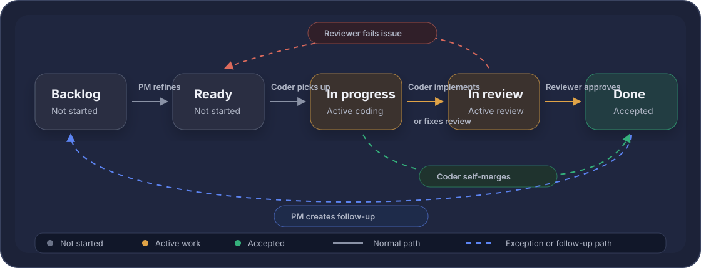

Dev build log
Closed issues by build number. For customer-facing updates, see Release notes.
Builds
-
1.0.332
#230
Use compact styled lane color selector in Protocol edit
-
1.0.327
#228
Tune root tab top spacing and section header scale
-
1.0.325
#226
Add Rose and Slate lane colors across app and design system
-
1.0.320
#224
Test native menu lane picker with colored SF Symbol dots
-
1.0.315
#221
Restore native tab large-title spacing across main views
-
1.0.309
#218
Move app version string from About footer to Settings footer
-
1.0.306
#217
Levels: add intermediate chart dates and simplify projection caption
-
1.0.298
#214
Add protocol-level lane color override
-
1.0.293
#209
Redesign active Today dose card hierarchy and actions
-
1.0.287
#208
Polish Log dose Supply card inventory row layout
-
1.0.277
#206
Today: promote injection cards earlier without changing reminder timing
-
1.0.272
#204
Scheduling: separate due-soon from due-now and revise timing rules
-
1.0.262
#202
Today active/later oral labels use shared display resolver
-
1.0.257
#198
Calendar/Today: resolve oral form labels through shared dose display logic
-
1.0.252
#199
Protocol picker: keep compound search always visible at bottom
-
1.0.249
#189
Remove generic custom-compound seed entries
-
1.0.247
#186
Protocol setup: Make schedule rows distinguish dates and dose overrides
-
1.0.247
#185
Levels: Remove site rotation card
-
1.0.245
#183
Fix setup blank-space tap targets with simulator coverage
-
1.0.232
#181
Scheduling: Treat end dates as inclusive local dates
-
1.0.229
#179
Inventory: Add compound chip filters
-
1.0.226
#177
Inventory: Auto-advance protocol link when stock is depleted
-
1.0.223
#175
Levels: Make estimate charts interpretable with ranges and projection
-
1.0.218
#172
Protocol: View full dose history with compound filters
-
1.0.213
#171
Schedule: Week starts on Monday
-
1.0.210
#169
MVP: Add injection site rotation defaults, custom sites, and conflict-aware suggestions
-
1.0.204
#167
Improve overdue dose resolution dialog and action behavior
-
1.0.201
#165
Bound notification scheduling and clear stale same-event reminders
-
1.0.194
#162
Set Started using date when unopened inventory is first used
-
1.0.192
#160
Clarify inventory dates and use effective use-by ordering
-
1.0.186
#159
Add Prepared syringe inventory form for clinic-prepared single-dose injections
-
1.0.181
#157
Inventory view should prioritize active stock and tab returns should reset to main views
-
1.0.179
#155
Make setup rows fully tappable and shorten New inventory title
-
1.0.176
#152
Late scheduled doses across midnight are hidden and manual Log creates duplicates
-
1.0.171
#150
Add global notification detail setting and protocol preview
-
1.0.163
#93
Add helper script for dev build notes entries
-
1.0.162
#141
Add week and month navigation to Calendar
-
1.0.160
#139
Review & Log supply picker can select only deductible inventory
-
1.0.157
#138
Add subtle app haptics for logging and saves
-
1.0.154
#133
Today UX: card flow, Review & Log, and one-touch logging
-
1.0.148
#132
Today logging foundation: actual-dose drafts and inventory semantics
-
1.0.144
#117
Inline destructive buttons render in iOS system red, spec forbids bright red
-
1.0.141
#124
Today view does not refresh when data or time changes
-
1.0.138
#122
Regression: dose notifications stopped firing while permissions remain enabled
-
1.0.134
#127
Fix oral capsule/tablet strength modeling and block fractional count deductions
-
1.0.129
#121
Regression: capsule inventory still deducts a mass fraction instead of one capsule
-
1.0.121
#119
Align populated Levels chart with design system
-
1.0.117
#113
Redo visual QA pass for light/dark design-system audit
-
1.0.114
#112
Align dark sheet surfaces with QuikShot card system
-
1.0.110
#111
Drop route suffix from dose card subtitles
-
1.0.107
#100
Clean up oral log inventory picker label and default selection
-
1.0.104
#96
Support safe correction of skipped and missed dose history
-
1.0.103
#101
Distinguish active inventory in protocol picker
-
1.0.102
#99
Fix oral capsule inventory deducting mass fraction instead of capsule count
-
1.0.98
#23
Audit app against updated light/dark design system
-
1.0.97
#17
Apply brand-dot energy accent in app surfaces
-
1.0.93
#102
Add edit-form delete actions across editable records
-
1.0.86
#94
Watch companion app MVP
-
1.0.81
#79
Edit logged dose history with inventory reconciliation
-
1.0.73
#80
Add automated dev build release notes page
Development process, pocket edition
